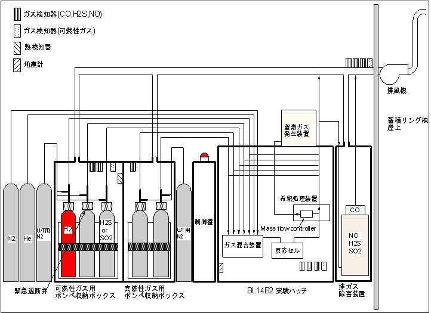
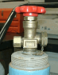
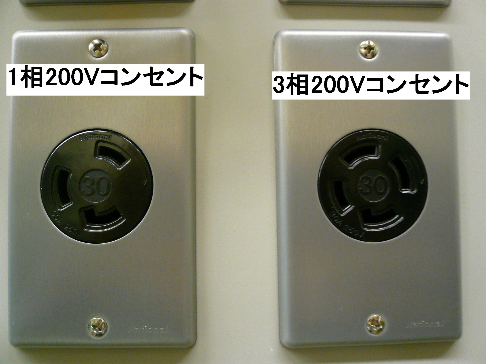

反応ガスを測定試料まで安全に供給し、使用後 のガスを無害化処理して屋外に連続的に排気しています。
 構成
構成
| ◆可燃性ガスボンベ収納ボックス | ： | 10Lボンベを3本設置可能（うち1本は硫黄系ガス専用ライン） |
| ◆支燃性ガスボンベ収納ボックス | ： | 10Lボンベを2本設置可能 |
| ◆除害装置 | ： | 毒性ガス濃度を許容濃度以下に処理(処理可能ガス種：CO、NO、H2S、SO2、(CH3)2S) |
| ◆制御盤 | ： | 火災検知器やガス検知器、地震計などを監視し、異常があった場合はパネルに表示 |
| ◆N2ガスボンベ、Heガスボンベ | ： | 実験ガスバランス用 |
| ◆U/T用N2ガスボンベ | ： | 配管内の窒素パージおよび気密検査用(可燃性ライン用と支燃性ライン用の2本準備) |
| ◆窒素ガス発生装置 | ： | 排出ガス希釈用窒素を10L/minで供給 |
| ◆ガス検知器 | ： | ガスボンベ収納ボックスおよび実験ハッチ、排気ダクトの3箇所でガスを監視 |
| ◆排風機 | ： | 排出ガスおよびガスボンベ収納ボックス筐体、除害装置筐体を排気 |
ガス供給排気装置概略図

※
利用開始の１週間前までに提出してください。/ Please submit at least one week before you
use the system.
１．このページの注意事項等をよくお読みください。/ Please read the notes on this website
carefully.
本装置を利用するには、課題申請時に利用についての記載があり、
かつ、安全審査をパスすることが必要です。
In order to use the system, it is necessary to include a statement
regarding its use when applying for a project,
and to pass a safety review.
２．下記のガス設備利用申込みをクリックし、ガス供給排気装置利用申請ページを開いてください。
Please click "ガス設備利用申込み" to open application form
for gas supply and exhaust system.
３．各入力欄に必要事項を記入してください。
Please fill in the necessary information in each entry field.
４．記入が終わりましたら、内容確認画面にお進みください。
After completing the entry field, please proceed to the content
confirmation screen.
５．内容に間違いがなければ、「メール送信」を押してください。
If there is no mistake in the contents, please press "メール送信/Send
e-mail".
注) 利用業務部への利用申込書とは異なるもので、ビームラインスタッフが実験条件等を確認するためのもので
す。
ボンベを持込まれる場合は、利用業務部に別途「高圧ガス容器持込事前申請書【様式25】」の提出が必要です。
This application form is different
from that to submit to the Users Office, and is for the beamline
staff to confirm the experimental conditions.
If you wish to bring gas cylinders, you need to submit "High-Pressure Gas Container Carrying-in Prior
Application [Form 25]" to the Users Office.
| Title | Updated | Download file |
| ガス供給排気装置ユーザーマニュアル※ご持参ください | 2025.05.13 | 2.25MB |
| ガス供給排気装置チェックシート※ご持参ください | 2012.05.17 | 74KB |
| ガス供給排気装置運用方針※ご一読ください | 2024.11.29 | 689KB |
※ 総酸性ガス：5.0％以下
※ CO濃度：1.0％以下
※ 各ガス爆発下限界以下
| |
最大濃度 | N2希釈処理後の濃度 | N2希釈処理後の最大流量 |
| 水素 | 100 ％ | 2 ％以下 | 5 L/min |
| 酸素 | 100 ％ | ― | ― |
| 炭化水素 | 100 ％ | 爆発下限界の1/2の濃度以下 | 5 L/min |
| NO | 10 ％ | ― | ― |
| CO | 10 ％ | 1 ％以下 | ― |
| H2S | 10 ％ | ― | ― |
| SO2 | 10 ％ | ― | ― |
| (CH3)2S | 10 ％ | ― | ― |
| 検知機器 | 設置場所 | 台数 | 発報条件 |
| 火災検知器 | 可燃性ガスボンベ収納ボックス | 1 | 60℃以上 |
| 地震計 | 実験ハッチ | 1 | 80GAL以上 |
| ガス検知器 | 可燃性ガスボンベ収納ボックス | 3 | 任意に設定可能 |
| 支燃性ガスボンベ収納ボックス | 1 | 任意に設定可能 | |
| 実験ハッチ | 4 | 任意に設定可能 | |
| 排気ライン | 3 | 任意に設定可能 |
・ ガス検知器センサユニット
| 検知ガス種 | 個数 | 発報条件 |
| H2および炭化水素 | 3 | 1000ppm |
| CO | 3 | 25ppm |
| NO | 3 | 25ppm |
| H2S | 3 | 10ppm |
ガス供給排気装置立上げおよび立下げについて ・
実験前の準備に4～5時間、実験終了後の片付けに2.5～3時間かかります(透過法、反応ガス1本使用時)。
・高圧実験の場合、 実験前の準備に6～7時間、実験終了後の片付けに5～6時間かかります(透過法、反応ガス1本使用時)。
・ Swagelok
等の継手を使用すること
・ 供給側の継手は、1/8インチのSwagelok継手です。
・ 排気側の継手は、1/4インチのSwagelok継手です。
・ 供給、排気側の継手共に1/4インチまたは1/8インチに変換可能です。

持込みガスボンベの受取・引取について ・ ユーザーが立会い、責任を持って行っ
てください。
・ 受取日時：実験開始時刻
・ 引取日時：実験終了時刻に速やかに業者に引取りに来てもらって下さい。
＜SPring-8付近の業者の連絡先＞
・株式会社 共和溶材 光都ガスセンター
TEL：0791-58-2482 FAX：0791-58-2483
・タツミ産業株式会社 テクノポリスＣＳセンター
TEL：0791-59-8070 FAX：0791-59-8075
※上記業者はビームラインまで納品・引取してもらえます。
If the airtightness test and operation cannot be performed according to the beamline manual,
If the power supply is required, the available electrical capacity is as follows:
Single-phase 100V 10A、Single-phase 200V 20A、Three-phase 200V 20A
Please use an earth leakage circuit breaker so that other beamline equipment will not be affected in the event of an earth leakage.

貸出備品ガ ス分析装置
冷 却水用チラー
真空ポンプ
in-situセル
温度調節器
ガ ス混合装置 [マスフローコントローラー（N2,H2S,H2,CO,O2,NO,He用）]
希 釈処理装置 [マスフローコントローラー（N2用）]
加湿器(蒸発缶)
除湿器
シンフレックスチューブ（ガス用φ1/4,1/8）
反応ガス：以下 のガスを用意しています。
| ガス種 | 純度 | 最大ボンベ圧力 | 容器 |
| H2 | 99.999%(G2) | 14MPa | 10L |
| O2 | 99.999%(G2) | 14MPa | 10L |
| CO | 10%(Heバランス) | 10MPa | 10L |
| NO | 10%(Heバランス) | 7MPa | 10L |
| He | 99.999%(G2) | 14MPa | 47L |
| N2 | 99.9995%(G3) | 14MPa | 47L |
こちらのガスをご使用になる場合、利用申込み時
の「試料および薬品等持込申請書」に
“ガス種”と“BL所有のガスを使用する”とお書きください。
大渕 博宣
（財）高輝度光科学研究センター(JASRI)
〒679-5198 兵庫県佐用郡佐用町光都1丁目1-1
Phone : 0791-58-0924
FAX : 0791-58-0830
e-mail : ofuchi
（注）e-mailアドレスは＠マーク以下を省略していますので、
アカウントの後に@spring8.or.jpを付けてください。